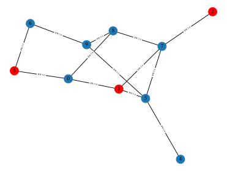

ChainXim 用户指南 User Guide
简介 Introduction
ChainXim是一款由XinLab开发的区块链仿真器，用于对不同参数设置下的区块链系统进行仿真验证。我们希望ChainXim能够兼容不同的共识协议、网络模型，并可以设计不同的攻击者，从多个维度全方位评估区块链的安全、吞吐等性能指标。
ChainXim is a blockchain simulator developed by XinLab to simulate and verify blockchain systems under different parameter settings. We hope that ChainXim can be compatible with different consensus protocols, network models, and can design different attackers to comprehensively evaluate the blockchain's security, throughput, and other performance metrics.
基于ChainXim的项目 ChainXim-Based Projects
- BagChain: A Dual-functional Blockchain Leveraging Bagging-based Distributed Learning. Source Code
Quick Start
下载 Download
代码仓库地址：https://github.com/ChainXim-Team/ChainXim
可以下载ChainXim的压缩包后解压，或者克隆位于Gitee上的软件仓库
可在ChainXim的代码仓库下载master分支的压缩包：master.zip
git克隆命令：git clone https://github.com/ChainXim-Team/ChainXim.git
文件结构
压缩包解压后或软件仓库克隆后的文件结构如下：
chain-xim
├── Attack.py
├── Environment.py
├── README.md
├── data
│ ├── __init__.py
│ ├── block.py
│ ├── chain.py
│ └── message.py
├── consensus
│ ├── __init__.py
│ ├── consensus_abc.py
│ └── pow.py
├── errors.py
├── external.py
├── functions.py
├── global_var.py
├── main.py
├── miner
│ ├── __init__.py
│ ├── _consts.py
│ ├── miner.py.py
│ ├── network_interface
│ ├── nic_abc.py
│ ├── nic_with_tp.py
│ └── nic_without_tp.py
├── network
│ ├── __init__.py
│ ├── adhoc.py
│ ├── deterprop.py
│ ├── network_abc.py
│ ├── stochprop.py
│ ├── synchronous.py
│ ├── topology.py
│ ├── topolpgy.csv
│ ├── topolpgy_coo.csv
│ └── topology_eclipse_sample.csv
└── system_config.ini
| 文件或目录 | 功能描述 |
|---|---|
| main.py | 仿真器主程序 |
| system_config.ini | 配置文件 |
| README.md | 用户文档 |
| environment.py | 环境类与相关函数 |
| miner/ | 存放矿工类与网络接口 |
| data/ | 存放Mesage、BlockHead、Block、Chain类与相关函数 |
| consensus/ | 存放抽象共识类、PoW类与相关函数的目录 |
| network/ | 存放多种网络类的目录 |
| attack/ | 攻击者类与相关函数 |
| functions.py | 包含计算哈希（SHA256）在内的一些函数 |
| external.py | 一些用于统计区块链指标的外部函数 |
| errors.py | 错误类，用于在仿真器中抛出错误 |
| global_var.py | 存放全局变量 |
配置环境 Environment Setup
- 安装Anaconda。Anaconda下载链接
- 从开始菜单打开Anaconda Prompt。
- 生成一个conda环境并激活，Python版本选择3.10。
conda create -n chainxim python=3.10 python-graphviz activate chainxim - 在ChainXim的根目录下通过pip安装所需要的包。
cd <project_directory> pip install -r requirements.txt
简单运行 Simple Startup
- 从开始菜单打开Anaconda Prompt，运行前需要激活conda环境。
activate chainxim - 在ChainXim的根目录下运行主程序。
cd <project_directory> python main.py
测试用例 An Example for Beginners
将以下参数传递给主程序，将会使ChainXim随机生成一个包含10个节点的矿工网络，其中2个节点为攻击者，采用的网络模型为TopologyNetwork，仿真总共持续3000轮次。
python main.py --total_round 3000 --miner_num 10 --network_type network.TopologyNetwork --attack_type SelfishMining --blocksize 8 --no_compact_outputfile --show_label
Network Attributes
miner_num: 10
Generate Approach: adj
Generate Edge Probability: None
Diameter: 4
Average Shortest Path Length: 2.067
Degree Histogram: [0, 2, 2, 4, 2]
Average Degree: 2.6
Average Cluster Coefficient: 0.067
Degree Assortativity: -0.2
Parameters:
Miner Number: 10
Consensus Protocol: PoW
Network Type: TopologyNetwork
Network Param: {'show_label': True, 'save_routing_graph': False, 'save_routing_history': True, 'dynamic': False, 'enable_resume_transfer': True, 'ave_degree': 5.0, 'bandwidth_honest': 5.0, 'bandwidth_adv': 5.0, 'outage_prob': 0.0, 'avg_tp_change_interval': 10.0, 'edge_add_prob': 0.1, 'edge_remove_prob': 0.05, 'max_allowed_partitions': 1.0, 'init_mode': 'adj', 'stat_prop_times': [0.03, 0.05, 0.08, 0.1, 0.2, 0.4, 0.5, 0.6, 0.7, 0.8, 0.9, 0.93, 0.95, 0.98, 1.0], 'rand_mode': 'binomial'}
Consensus Param: {'target': '0010624dd2f1a9fc000000000000000000000000000000000000000000000000', 'q_ave': 1.0, 'q_distr': 'equal'}
Adversary Miners: [1, 2, 3]
Attack Execute Type: SelfishMining (Adversary's q: 3.0)
Block Size: 8.0
Chain Growth Property:
9 blocks are generated in 3000 rounds, in which 0 are stale blocks.
Average chain growth in honest miners' chain: 9.0
Number of Forks: 0
Fork rate: 0.0
Stale rate: 0.0
Average block time (main chain): 333.33333333 rounds/block
Average block time (total): 333.33333333 rounds/block
Block throughput (main chain): 0.003 blocks/round
Throughput in MB (main chain): 0.024 MB/round
Block throughput (total): 0.003 blocks/round
Throughput in MB (total): 0.024 MB/round
Chain_Quality Property: {'Honest Block': 10, 'Adversary Block': 0}
Ratio of blocks contributed by malicious players: 0.0
The simulation data of SelfishMining is as follows :
{'The proportion of adversary block in the main chain': 'See [Ratio of blocks contributed by malicious players]', 'Theory proportion in SynchronousNetwork': '0.2731'}
Double spending success times: 0
Block propagation times: {0.03: 0, 0.05: 0, 0.08: 0, 0.1: 0, 0.2: 1.111, 0.4: 2.0, 0.5: 2.556, 0.6: 3.727, 0.7: 3.667, 0.8: 4.308, 0.9: 4.769, 0.93: 0, 0.95: 0, 0.98: 0, 1.0: 5.0}
Count of INV interactions: 267
Count of full chain synchronization: 25
Count of data sending: 89
Fail to generate routing gragh for each block from json.
各输出项的详细解释可以参考仿真器输出. 此外，仿真过程中产生的各类数据将保存在Results文件夹，包括每个矿工的区块链记录、区块链可视化矢量图、区块链攻击者日志、路由历史、网络拓扑图、区块传播示意图等。以下是仿真器输出的部分图像的样例。
区块链可视化矢量图（blockchain_visualization/Blockchain Structure.gv.svg）

图中红色区块由攻击者产生，蓝色区块由诚实矿工产生。
网络拓扑图（Network Results/network topology.svg）
{kind=link}

图中相邻节点之间标记了传输带宽，单位为MB/round。
仿真实例 Simulation Examples
开发者文档 Developer's Document
贡献者 Contributors
曹苇杭 Weihang Cao
- 主要负责整体框架，共识层、评估层的代码编写，统筹项目进度
陈炳文 Bingwen Chen
- 主要负责网络层部分的代码编写
陈阳 Yang Chen
- 主要负责攻击者部分的代码编写
崔自翔 Zixiang Cui
- 主要负责对共识层和基础框架进行优化
陈喜年 Xinian Chen
- 主要负责仿真器的测试与优化
凌昕彤 Xintong Ling
- 指导老师